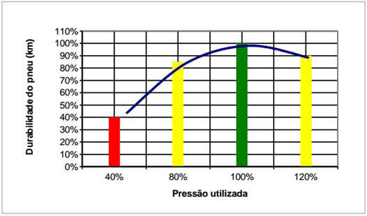

A segurança veicular e a eficiência energética são preocupações centrais no desenvolvimento de novas tecnologias automotivas. Um dos componentes mais críticos para garantir a estabilidade, o desempenho e a economia de um veículo é, sem dúvida, o pneu. A manutenção inadequada da pressão dos pneus é uma das principais causas de acidentes de trânsito, podendo levar à perda de controle do veículo ou a falhas estruturais catastróficas (conhecidas como blowouts), muitas vezes decorrentes do superaquecimento.
Além do risco iminente à segurança, pneus com pressão incorreta – seja ela insuficiente ou excessiva – impactam diretamente o desempenho do veículo. Pneus murchos aumentam a resistência ao rolamento, o que eleva significativamente o consumo de combustível e, consequentemente, a emissão de poluentes. Este atrito excessivo também acelera o desgaste irregular da banda de rodagem, diminuindo a vida útil do pneu e gerando custos de manutenção mais elevados.
No gráfico apresentado abaixo, é possível observar que a durabilidade máxima do pneu depende da utilização correta da pressão. Em alguns casos pode-se observar que:
1- Se o pneu rodar com a pressão correta (100%) ele terá o máximo de durabilidade.
2- Se o pneu rodar com 20% de pressão a mais (120%) ele terá 10% a menos de durabilidade.
3- Se o pneu rodar com 20% de pressão a menos (80%) ele terá 15% a menos de durabilidade.
4- Se o pneu rodar com 60% de pressão a menos (40%) ele terá 60% a menos de durabilidade.

Com base nisso, desenvolvemos um projeto focado na criação de um protótipo de aferidor de baixo custo, capaz de monitorar a pressão e a temperatura dos pneus. O sistema foi projetado para utilizar componentes acessíveis, como o microcontrolador ESP32 e sensores de precisão, com o objetivo de fornecer alertas em tempo real ao condutor.